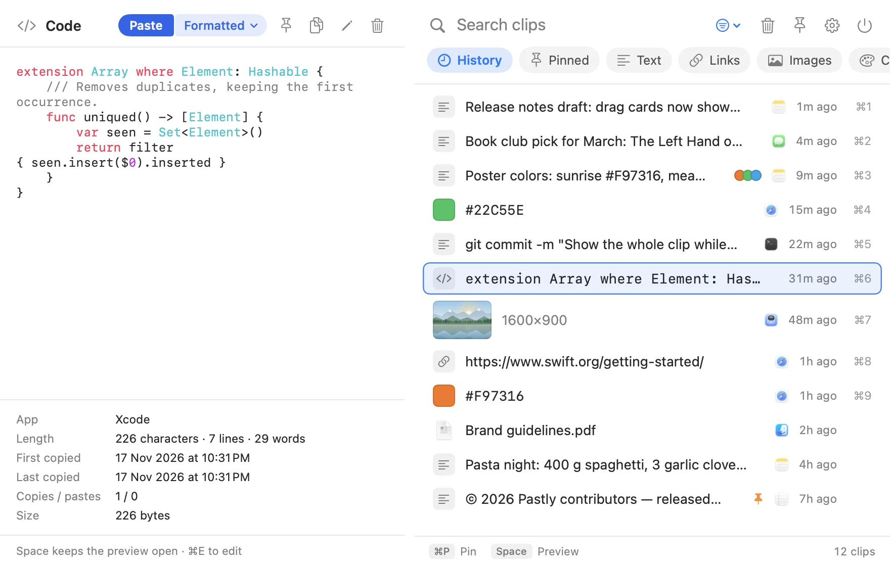
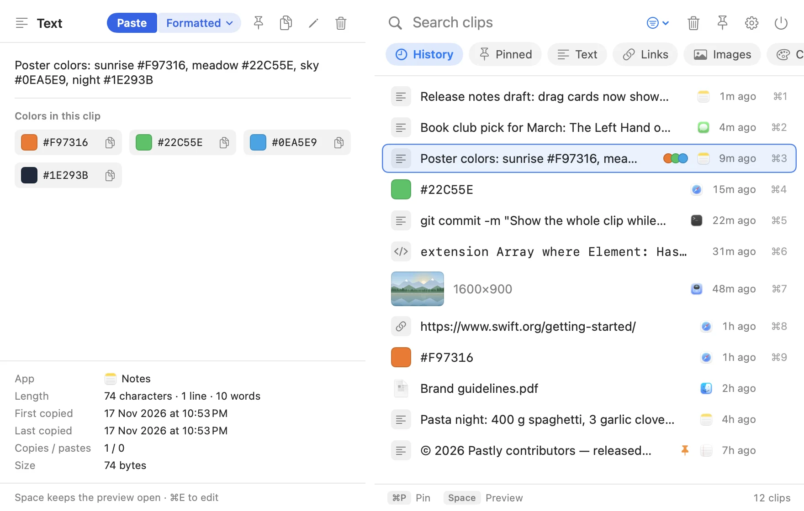
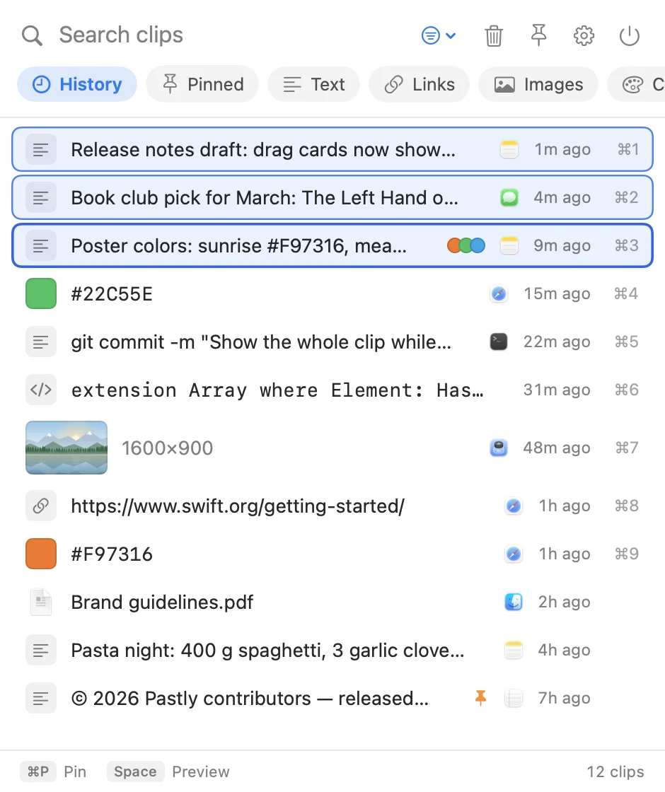
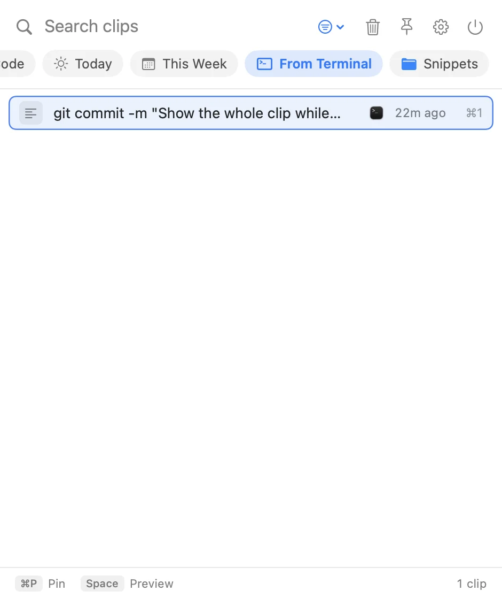
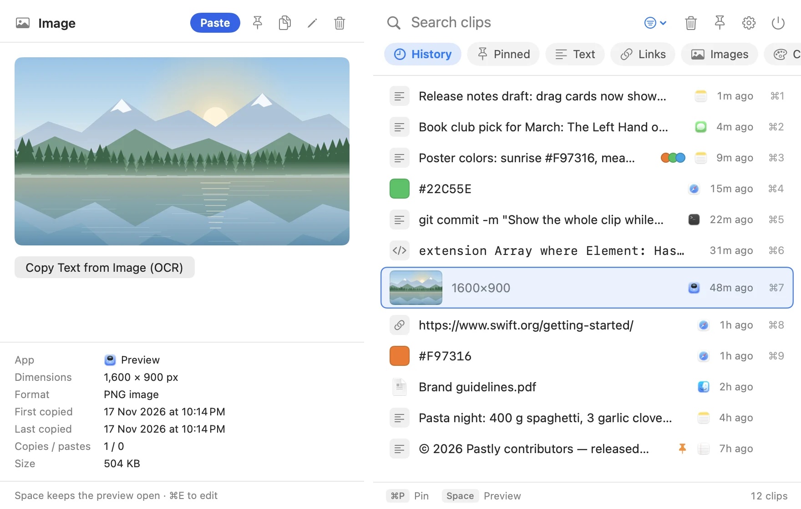
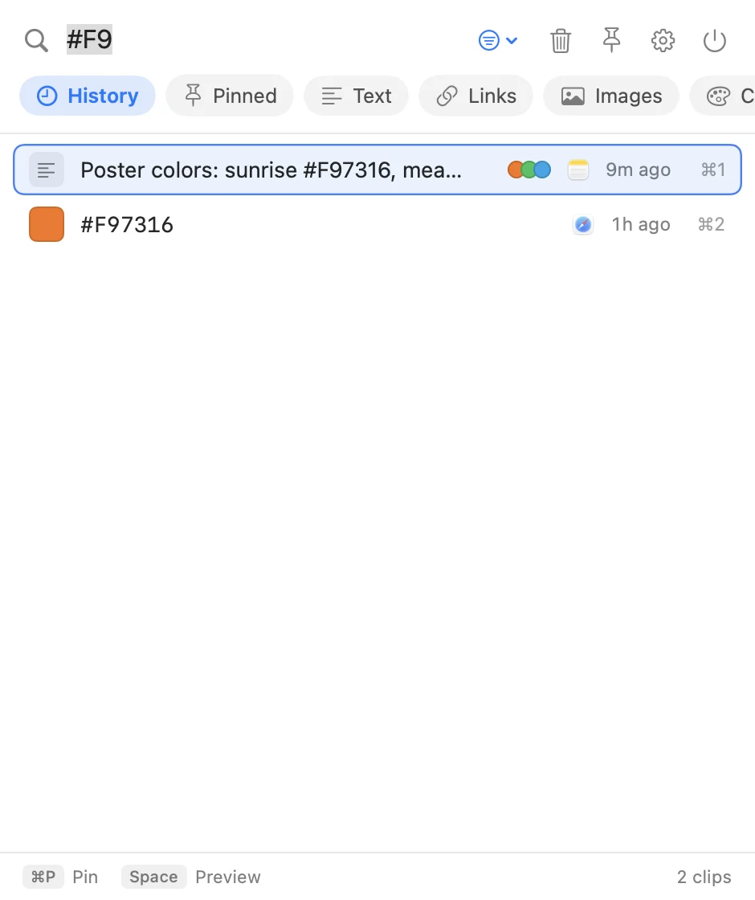
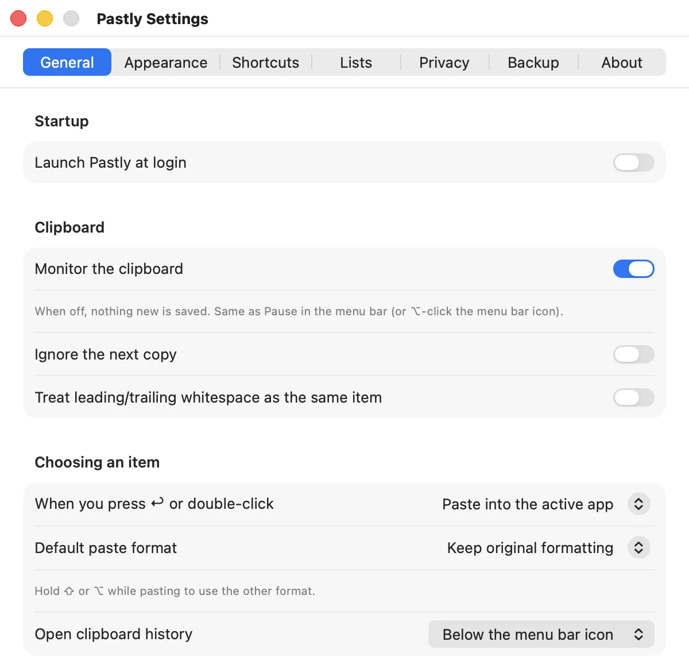

Every kind of clip
Plain and rich text, links, images, files, HEX and rgb() colors — and code, detected and highlighted for you.
Open source · MIT · macOS 14+ · Apple silicon
Pastly quietly remembers every text, link, snippet, color, image and file you copy — and hands it back the moment you press ⇧⌘V. Everything stays on your Mac.
Pasted clips land here.
Hands-on
This little Pastly runs on this page. Click or use ↑↓, Space to preview, ↩ to paste, ⌘A to select all, ⌫ to delete and ⇥ to switch lists.
Use ⌘C anywhere, like always. Nothing new to learn.
Every clip is kept — with its app, time, formatting and a real thumbnail.
⇧⌘V, type a word, or press ⇥ to jump between lists and kinds.
Press ↩ and it lands where your cursor was. Or drag it out to any app.
Pastly lives in your menu bar and quietly saves every copy. Press ⇧⌘V anywhere and it's all there.
Plain and rich text, links, images, files, HEX and rgb() colors — and code, detected and highlighted for you.
Start typing to filter thousands of clips by text, title or source app. Tabs jump between kinds and lists.
Pin the snippets you reuse. Smart Lists fill themselves — “From Terminal”, “Work links”, “Today” — from rules you choose.
Paste into the app you were using — Formatted or Plain, your choice for every paste — transformed (UPPER, trimmed, pretty JSON…), or several clips one by one.
Click a clip or press Space to see all of it — full text, the image, a color's values — with when and where you copied it.
Your history stays on this Mac. Password managers are skipped automatically, and you choose which apps to ignore.
Up close
Click a clip or press Space and a preview opens beside the list — highlighted code, full images, every color value, the app it came from and how often you've used it.

HEX codes inside any text turn into swatches you can copy in one click.

⌘-click, ⇧-click or ⌘A. Paste them together — or ⌘↩ to paste one by one, each ⌘V bringing the next.

Smart Lists gather clips by app, kind, domain, words, patterns or date. Pin and file the rest by hand.

Drop text into a search box, an image into an upload area, a file into Finder — each arrives as the real thing.
Plain and rich text, code, links, colors, images in their original format, files — and videos and music with a poster frame or cover art and a built-in player.

Type a few letters and the list narrows as you go — by text, title or the app it came from.

Click the icon to open it under the menu bar, right-click for recent clips and pause, ⌥-click to pause saving.
Keyboard
Every action has a shortcut, and the global ones are yours to change in Settings.
Make it yours
Real screenshots of Pastly Settings.

Privacy & security
No servers, no account, no analytics. Here's exactly what happens to what you copy.
~/Library/Application Support/PastlyYou can also cap how many items are kept, delete old ones automatically, clear history when Pastly quits, or pause saving at any time.
Open source
Swift and SwiftUI, no third-party dependencies. Builds with Apple's free Command Line Tools.
Use it, fork it, ship it — just keep the notice.
Fixes and features are welcome. Start with the contributing guide.
Found a bug or have an idea? Open an issue with the steps to reproduce.
Not built yet — listed so you know what's coming, not what's there.
Download
xcode-select --install.shasum -a 256 Pastly.dmg), then open Pastly.dmg and drag Pastly to Applications.A new installation starts with an empty history, stored only on your Mac in ~/Library/Application Support/Pastly.
Or build it yourself
git clone https://github.com/your-github-username/Pastly.git
cd Pastly
./Scripts/build.sh --installChangelog
A complete feature guide, contributor docs and a security policy; a corrected shortcut hint in the welcome message; and paste one by one now copies the first clip when Accessibility permission is missing.
Drags deliver real text, images, links and files to any app or browser, with a complete drag card. Images copied in Finder get real thumbnails; videos and music get previews and a player; HEX colors inside text are recognized; exclusion rules can be switched on and off.
General, Appearance, Shortcuts, Lists, Privacy, Backup and About — accent colors, conflict-checked shortcuts, automatic backups and restore, update check.
Compact window with tabs, preview, code detection, Smart Lists and the one-by-one paste queue.
⌘A, ⇧/⌘-click, delete with undo, ⌘V pastes what you selected; native copy sound and animation.
FAQ
Yes — every feature, for everyone, with no trial, tiers or subscription. It's open source, so it will stay that way.
Apple only verifies apps from paid developer accounts. Pastly is built without one so it can stay free. Open it once, then choose Open Anyway in System Settings → Privacy & Security and confirm with Touch ID or your password. On macOS 14 you can also Control-click Pastly in Applications and choose Open. Or run xattr -dr com.apple.quarantine /Applications/Pastly.app in Terminal. You only need to do this the first time.
To paste for you. After you pick a clip, Pastly presses ⌘V in the app you were using, and the paste queue watches for your ⌘V. Without the permission, it simply copies the clip and you paste it yourself.
In ~/Library/Application Support/Pastly on your Mac. Clear it from the menu bar icon (right-click → Clear History), or set Pastly to keep only a number of clips or delete old ones automatically in Settings.
No, on purpose — nothing leaves your Mac. To move your history, use Settings → Backup → Export, then Import on the other Mac.
Apple silicon Macs only (M1 or newer), running macOS 14 Sonoma or newer.